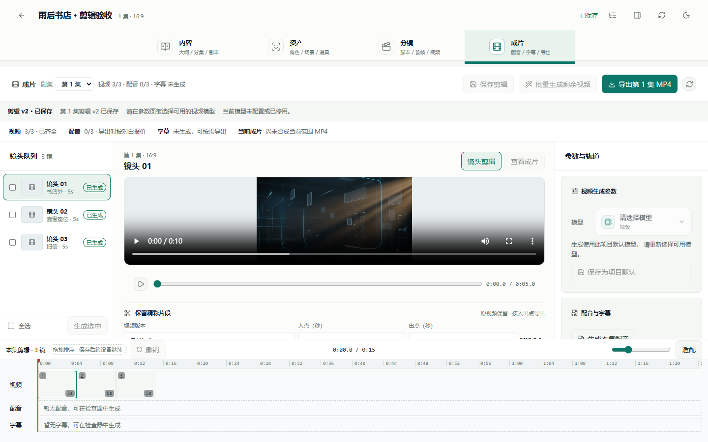
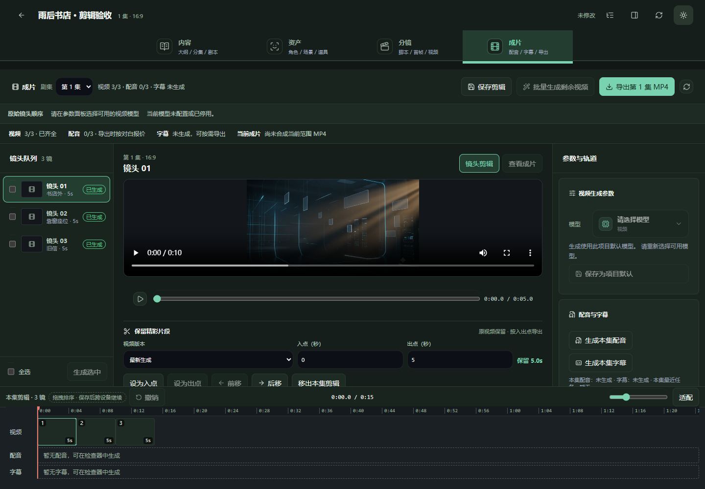
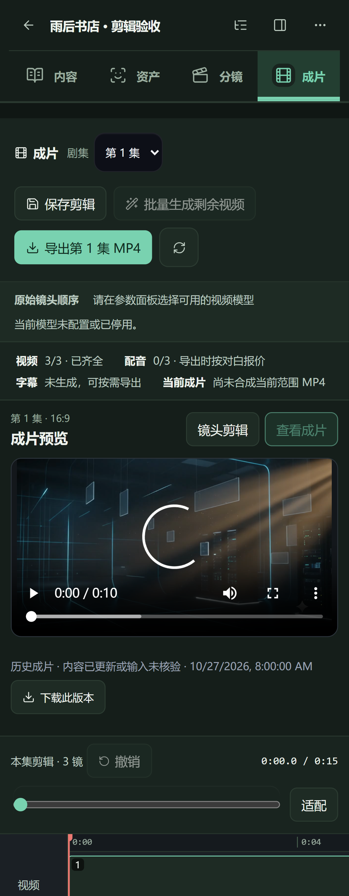

工作区结构
左侧镜头队列、中间预览与裁剪、右侧生成参数与成片版本、底部时间线。窄屏将两侧转为抽屉，保留中间操作空间。
视频创作 / 剪辑 / 交付 · 2026.10.27
从选片、裁剪、排序到保存和导出，让创作者在同一个工作区完成精修；让版本、费用和生成结果始终可核对。
本轮代码已实现暖白 × 青绿本地验收与生产状态分别记录本轮将原有成片工作区升级为可保存的镜头剪辑与交付工作区。每一集可以选择已有生成版本、设置入点和出点、调整播放顺序、移出与加回镜头。剪辑方案独立保存，不修改原分镜和原始生成资产。
合成时，服务器读取已保存的剪辑版本，实际裁剪对应视频后拼接；配音与字幕沿用调整后的时间轴。预览支持镜头与完整成片切换，剪辑中心保留生成片段入口，并提供成片版本库。
| 能力 | 实现结果 | 关键保护 |
|---|---|---|
| 镜头裁剪 | 数字入出点、将当前播放时间设为入点或出点、裁剪区间预览 | 至少保留 0.2 秒；校验分镜时长和真实源视频时长 |
| 选片与排序 | 选用当前或历史生成视频；拖拽、前移和后移；移出或加回 | 仅选当前项目、当前集、对应镜头的成功视频 |
| 保存与恢复 | 每集版本号、手动保存、30 步撤销、刷新恢复、下载草稿 JSON | 并发冲突保留草稿；载入云端需确认；未保存导航保护 |
| 成片展示 | 完整 MP4 预览、历史版本、源状态、下载；手机与深色布局 | 旧成片不冒充当前版本；播放失败给出恢复提示 |
| 导出 | 保存后报价、确认积分上限、按指定剪辑版本合成 | 草稿或视频替换后暂停导出；服务器复核版本与输入 |
调研采用三个平台的公开官方页面，访问日期为 2026 年 10 月 27 日。没有登录竞品或执行付费试用；以下内容用于设计决策，不代表完整能力对比或实际性能评测。
左侧镜头队列、中间预览与裁剪、右侧生成参数与成片版本、底部时间线。窄屏将两侧转为抽屉，保留中间操作空间。
未生成、生成中、失败、可播放与历史成片分别展示。保存失败保留修改；已保存但刷新失败提示核对，避免重复提交。
选择最新视频后再次生成，如果素材地址发生变化，原剪辑会提示重新确认选片并保存。这样可以防止旧剪辑在用户不知情时导出替换后的内容。
界面使用现有暖白背景、青绿主操作、细边框和 Lucide 图标。浅色与深色复用语义变量；裁剪参数与成片入口建立清楚层级。以下截图来自本轮真实浏览器操作，使用本地既有品牌视频和隔离接口夹具，不是用户作品或付费模型质量样片。



商业化沿用项目已有的普通创作者与两档月度会员体系。本轮没有新增会员权限或价格，也没有为本地剪辑操作增加新的扣费类型。视频生成与配音仍按现有服务端报价和积分规则执行。
| 用户层级 | 建议价值主张 | 本轮状态 |
|---|---|---|
| 普通创作者 | 从生成到首个成片，提供基础选片、裁剪、排序、保存和下载 | 本轮编辑能力接入现有创作者工作区 |
| 第一档月度会员 | 通过已有会员积分、权益支持更稳定的持续创作 | 沿用此前会员实现；没有新增剪辑专属收费或权限 |
| 第二档月度会员 | 后续可规划更高规格导出、批量交付、品牌模板与审片协作 | 新增权益仅为方案建议，未实现、未承诺销售 |
编辑操作本身不触发付费生成。点击导出时展示实际配音报价与积分上限；已有可复用输入是否产生费用由服务器判断。不要将“导出不额外收费”写成营销承诺，因为成片可能需要新的配音。
若沿用 40% 毛利目标：最低净收入 ≥ 单次完整可变成本 ÷ 0.60。完整成本需计入供应商、配音、编码计算、存储与下载、退款及渠道费用；积分售价、会员赠送积分与活动折扣均需折算。
该公式是定价审核方法，不代表目前已达到目标。会员新售价、真实扣费、供应商质量与成本闭环仍需独立生产验收。只有能交付的能力才能进入会员权益页。
记录生成成功率、裁剪保存率、报价到导出的转化、真实成片下载率、失败退款与每个交付作品的成本。当前未新增埋点管线，因此这些指标不能当作已有运营数据。
| 层次 | 实现 | 解决的问题 |
|---|---|---|
| 共享模型 | DeliveryEditClip / DeliveryEditReference；镜头、视频资产、入出点、集号与 revision | 前后端一致传递剪辑；客户端不提交可信素材 URL |
| 数据库 | DeliveryEdit，项目与集唯一；项目生命周期锁、行锁和预期版本检查 | 多标签或多设备修改产生 409，保留用户草稿 |
| API | PUT /projects/:id/delivery-edit；导出 quote/create 传剪辑引用 | 项目权限、同集校验、成功资产与版本校验 |
| 编辑器 | useDeliveryEdit、裁剪参数、时间线、版本库与草稿下载 | 跨刷新恢复；未保存导航保护；源被替换后显式确认 |
| 导出输入 | 重建指定剪辑版本，固化导出输入；保留旧快照兼容 | 识别当前、过期和未核验成片，防止错误复用 |
| 合成 | FFmpeg 按入点读取并限制片段长度；字幕毫秒精度；配音按剪辑时长处理 | 真实裁剪不循环补齐越界素材；0.5 秒片段与字幕时间匹配 |
部署需生成 Prisma 客户端，并按项目既有流程应用新增表结构。新表已经在隔离数据库验证；生产数据库迁移需随正式部署完成，不能将本地构建成功当作线上可用。
| 证据 | 验证范围 | 限制 |
|---|---|---|
| 类型检查与构建 | 共享模型、API、前台类型与生产打包 | 不等于生产部署 |
| 隔离 API 与数据库 | 301 项通过；独立数据库与 Redis；保存并发、权限和导出输入 | 无生产数据库与供应商密钥，资源已清理 |
| 真实 FFmpeg | 使用可辨别画面的合成素材，检查入点、0.5 秒长度、毫秒字幕与越界拒绝 | 验证编码逻辑，不评价商业模型质量 |
| 浏览器交互 | 92 项通过，2 项真实入口检查跳过；含桌面与手机剪辑、保存、报价和历史预览 | 采用隔离接口夹具和本地既有视频；无真实支付或供应商验收 |
| 真实商业闭环 | 付费模型生成、真实收费与会员新售价验收 | 本轮没有执行，不声明通过 |
验收记录与 JSON 单独保存，包含检查结果、截图、来源归档哈希与生产发布结论。
以上后三步为后续产品方案。本轮目标是让已有生成内容可以稳定精修、预览和导出，并为后续商业化保留可靠的版本与计费基础。